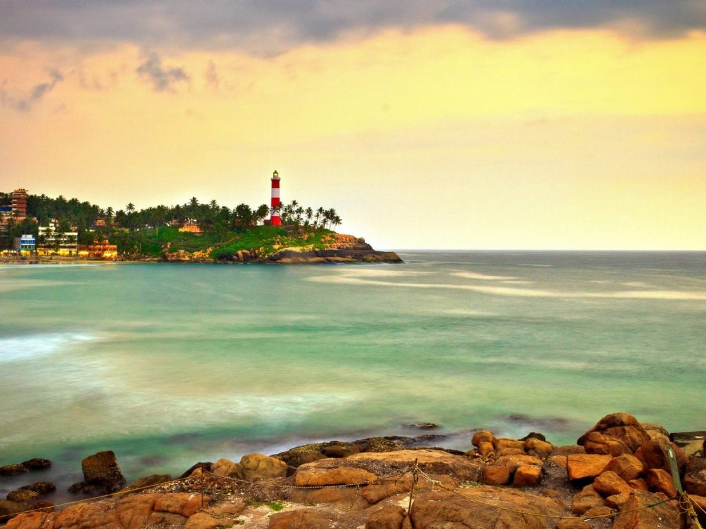

Neyyar Dam & Wildlife Sanctuary
Famous for its Lion and Deer Safari, Neyyar Wildlife Sanctuary is a treat for nature enthusiasts. The park houses a crocodile farm and elephant rehabilitation centre. Ask for a guided tour of the sanctuary which is quite informative.

Padmanabhaswamy Temple

Kovalam Tourism
Kovalam is an idyllic coastal town located around 13 km from Thiruvananthapuram in Kerala. Famous for its three adjacent crescent-shaped shallow water and low tidal beaches, Kovalam is dotted with resorts and ayurvedic massage centres. Kovalam perhaps comes full circle as it is also a shopping destination given the rich spices, wooden statues and handicrafts that can make popular takeaways.
Agasthyakoodam
Agastyakoodam, also known as Agastya Mala Peak is the second highest peak in Kerala with an extensive height of 1868 metre.the slopes of the peak are carpeted in purple hues of orchids. Home to diverse species of fauna and rare species of medicinal herbs, the region is a hotspot for avifauna and exotic birds. The spot is considered a haven for birdwatchers.There is also a statue of him at the top where the Hindus can offer puja and prayers.